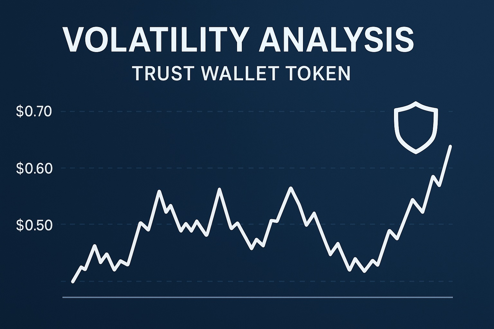

Trust Wallet Token Price Prediction for End of 2025: In-Depth Analysis and Insights
The information in this article is provided for educational purposes only and is not investment advice. Cryptocurrency investments carry risks.
Introduction
As of August 20, 2025, 01:20 AM EEST, Trust Wallet Token (TWT) is trading at approximately $0.77, reinforcing its role as a utility token for Trust Wallet, a leading mobile cryptocurrency wallet. Launched in 2020 as a BEP-20 token on Binance Smart Chain (BSC), TWT supports governance, staking, and discounts on in-app services like decentralized exchange (DEX) trades. With a circulating supply of 416.65 million TWT and a market cap of $319.36 million, TWT ranks No. 158 in the crypto ecosystem. This article provides a comprehensive analysis of TWT’s price outlook for the end of 2025, exploring bullish and bearish scenarios, key growth drivers, and potential risks based on current market trends and Trust Wallet’s ecosystem developments.

Current Situation
As of August 20, 2025, TWT’s price is $0.77, reflecting a 2.86% decline over the past 7 days and a 3.16% drop in the last 24 hours, with a volatility of 3.72%. Despite short-term bearishness, TWT has shown 50% green days over the last 30 days, with a Fear & Greed Index of 60 (Greed). Over the past year, TWT has fallen 12.54% from $0.88, and it remains 72.37% below its all-time high of $2.72 (December 2022). Trust Wallet’s growing user base, ISO-certified security, and integrations with BSC drive its relevance, as highlighted in recent posts on X emphasizing its reliability and mobile-first approach.
Price Predictions for End of 2025
Analyst forecasts for TWT by December 2025 vary due to market volatility and differing methodologies. Bearish projections, such as WalletInvestor’s, suggest a decline to $0.2852–$0.5971 if market corrections persist. Moderate forecasts estimate TWT trading between $0.7868 and $1.35, supported by steady wallet adoption. Bullish scenarios, like those from Changelly and Coinpedia, predict TWT reaching $1.54–$2.60, particularly if a market rebound occurs between February and April 2025 or if Trust Wallet announces new features. DigitalCoinPrice projects an average of $2.52, while TradingBeast estimates up to $1.6755. These projections reflect TWT’s potential amid growing wallet usage.
Factors Driving Price Growth
- Trust Wallet Adoption: Trust Wallet’s 1 million+ downloads and support for multiple blockchains (e.g., Ethereum, BSC, TRON) drive TWT demand for governance and discounts.
- Binance Smart Chain Integration: Low fees and fast transactions on BSC enhance TWT’s utility for in-app services.
- Security and Reliability: ISO certification and a user-friendly interface, as noted in X posts, attract new users.
- Market Rally: A projected crypto market surge in 2025 (February–April) could boost TWT’s price, as seen in past bull runs.
- Ecosystem Enhancements: New features like staking rewards and DEX integrations increase TWT’s use cases.
Risks and Downward Factors
- Market Volatility: A projected 30–50% market correction in early 2025 could pressure TWT’s price, as seen in its recent 2.86% weekly decline.
- Regulatory Risks: Stricter regulations on crypto wallets or BSC could limit Trust Wallet’s accessibility.
- Competition: Rival wallets like MetaMask or custodial platforms could challenge Trust Wallet’s market share.
- Adoption Pace: Slower-than-expected user growth or feature adoption could hinder TWT’s price appreciation.
Volatility Analysis
From July to August 2025, TWT’s price dropped from $0.80 to $0.77, with a volatility of 3.72%, indicating relative stability compared to broader market trends. Technical indicators show mixed signals: the 50-day moving average is rising, suggesting short-term bullishness, while the 200-day moving average has been falling since July 20, 2025, indicating longer-term weakness. An RSI of 51.73 suggests neutral conditions. A projected market recovery in early 2025 could support TWT’s growth, particularly as Trust Wallet expands its mobile-first, non-custodial features, as noted in recent X posts praising its reliability.
Conclusion
By the end of 2025, Trust Wallet Token’s price is projected to range between $0.78 and $1.35, with the potential to reach $1.54–$2.60 in a bullish market driven by Trust Wallet’s adoption, BSC integration, and new features. However, investors should remain cautious of market volatility, regulatory risks, and competition from other wallets. Thorough research and risk management are essential before investing in TWT. Always conduct your own due diligence, as cryptocurrency markets are highly unpredictable.